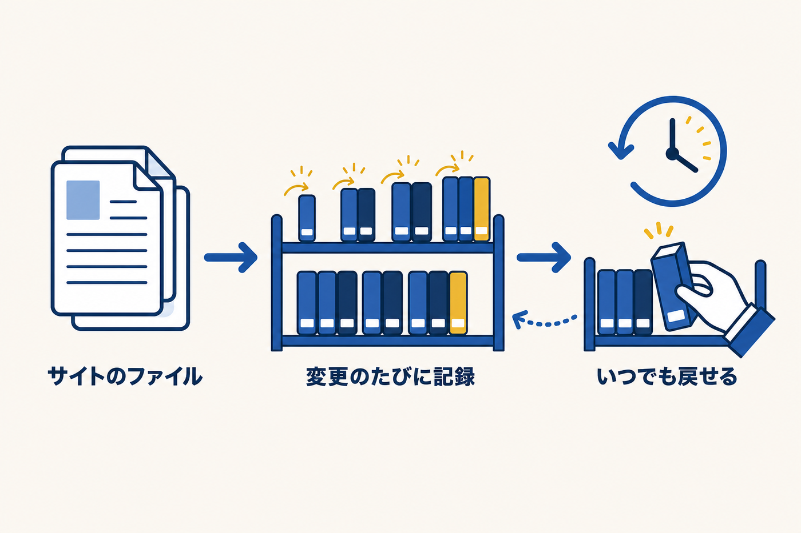
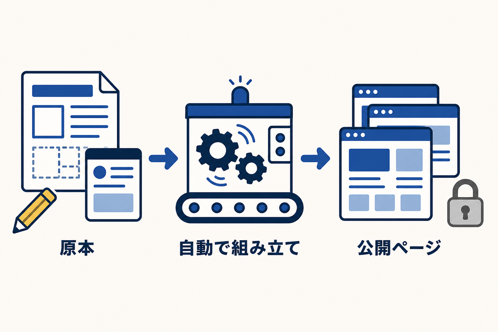

目次を開く
このガイドについて 1. あなたのホームページの仕組み（超入門） 2. サイトを構成するファイルの役割 3. 「管理画面でやること」と「AIに頼むこと」の切り分け 4. 事前準備（初回だけ・15分） 5. AIへの頼み方・3つの基本 6. 頼み方の文例集（コピペで使えます） 7. 変更を本番に反映する流れ 8. 絶対にやってはいけない3つのこと 9. 壊れたときの戻し方 10. よくある質問 11. 困ったときは 付録 「素材づくり」プロンプト集（文章・画像）表示が崩れた・戻したい・AIの答えが変？——たいていの疑問はそこで解決します。解決しなければ oda@syuni.jp へどうぞ。
ホームページAI活用ガイド
― ChatGPT・Claudeに頼んで、自分のホームページを自分で育てる本 ―
スマ塾（合同会社SyUNi）
お問い合わせ：oda@syuni.jp
このガイドについて
このガイドは、スマ塾で制作したホームページを納品させていただいた塾長先生向けの資料です。
日々の更新（お知らせ・料金・ブログなど）は、納品時にご案内した管理画面からできます。一方で、「メインの色を変えたい」「夏期講習の特設ページを作りたい」といったデザインや構造の変更は、管理画面の守備範囲外です。
従来ならその都度、制作会社に数千円〜数万円を払って依頼する内容ですが、あなたのホームページは、ChatGPTやClaude（以下「AI」と呼びます）に頼めばご自身で変更できる構造で作ってあります。このガイドは、その「頼み方」を具体的な文例つきでまとめたものです。
パソコンの専門知識は前提にしていません。「ChatGPTやClaudeを一度でも触ったことがある」程度で読めるように書いています。
第1章 あなたのホームページの仕組み（超入門）
1-1．ホームページは「ただのファイルの集まり」です
あなたのホームページは、特別なシステムやデータベースではなく、普通のファイルの集まりでできています。文章とデザインが書かれたファイル、料金やお知らせが書かれたファイル、写真のファイル。それだけです。
だから、ワープロの文書を直すのと同じ感覚で、ファイルの中身を書き換えればホームページが変わります。その「書き換え」の部分をAIに手伝ってもらうのが、このガイドのテーマです。
1-2．変更履歴はすべて「GitHub」に残っています
あなたのサイトのファイル一式は、GitHub（ギットハブ）というサービスに保管されています。
GitHubとは：ファイルの保管庫と「変更履歴の記録係」を兼ねたサービスです。世界中のソフトウェア開発で標準的に使われています。あなたのサイト専用の保管場所（リポジトリと呼びます）は非公開設定で、納品時にお渡ししたアカウントでアクセスできます。
GitHubの最大の特長は、過去の変更が1回分ずつ、すべて記録されていることです。「いつ・どのファイルの・どこを・どう変えたか」が全部残っています。
例えるなら、ワープロの「元に戻す」ボタンが永久に効く状態です。普通のワープロはソフトを閉じたら元に戻せませんが、GitHubは1年前の状態にも、昨日の状態にも戻せます。
1-3．だから「壊しても大丈夫」です
これが一番お伝えしたいことです。
AIに頼んだ変更で表示が崩れても、変更前の状態に必ず戻せます。取り返しのつかない失敗は、仕組み上ほぼ起きません（戻し方は第9章）。
「触って壊したら怖い」と身構える必要はありません。安心して試してください。

第2章 サイトを構成するファイルの役割
AIに頼むとき、「どのファイルを渡すか」が結果を大きく左右します。まず全体像だけ頭に入れてください。
2-1．ファイル構成
あなたのリポジトリには、おおよそ次のファイル・フォルダが入っています。
| ファイル／フォルダ | 役割 | 触ってよいか |
|---|---|---|
template.html |
デザインの原本。色・レイアウト・固定の文言はここ | ◎ AIに頼む変更の主役 |
data/ フォルダ内の .json ファイル |
お知らせ・料金・実績・FAQなどの中身データ | ◎ ただし普段は管理画面から編集 |
blog-posts/ |
ブログ記事（管理画面が書き込む） | ○ 通常は管理画面から |
images/ |
写真 | ○ 同じファイル名で上書きすれば差し替わる |
build.js |
template.htmlとdataを合体させてサイトを組み立てるビルドスクリプト | △ 通常触らない |
index.html・blog/ |
ビルドの生成物（組み立ての結果） | ✕ 直接編集しない（第8章） |
admin/ |
管理画面の設定 | ✕ 通常触らない |
netlify.toml・package.json |
公開サーバーの設定 | ✕ 通常触らない |
data/ の中身は次の5ファイルです（管理画面の編集項目と1対1で対応しています）。
news.json… お知らせpricing.json… コースと料金results.json… 成績の実例goukaku.json… 合格実績faq.json… よくある質問
JSONとは：
{ "name": "中学生コース", "price": "14,300" }のように、項目名と値の組でデータを書く形式です。中身は普通の文字なので読めば意味がわかりますが、カッコや記号の対応が崩れると機械が読めなくなります（だからAIに編集してもらうのが安全です）。
2-2．複数ページ型（テンプレートC）をお使いの場合
納品したサイトが複数ページ構成（トップ／コース・料金／講師紹介／合格実績／入塾の流れ／アクセス／お問い合わせ／ブログ）の場合は、上の表に次の違いがあります。
- デザインの原本は
template.htmlではなく、templates/フォルダ内の各ページ雛形と、templates/partials/の共通部品（header.html＝ヘッダー、footer.html＝フッター、cta.html＝申込ボタン帯、head.html＝ページ設定）です。 data/にはsite-info.json（塾名・住所・電話・メインカラーなどの基本情報）とtaiken.json（合格体験記）が追加であります。電話番号・住所・色はこのsite-info.jsonを直すだけで全ページに反映されます。- 各ページのフォルダ（
courses/teachers/など）に入っているindex.htmlはすべて生成物です。直接編集しないでください。
ご自身のサイトがどちらの型かは、リポジトリに templates/ フォルダがあるかないかで見分けられます（あれば複数ページ型）。
2-3．一番大事な区別：「原本」と「生成物」
このサイトは、原本（template.html や templates/ と data/）を材料に、build.js というプログラムが完成品（index.html など）を自動で組み立てる方式です。

つまり index.html は「印刷結果」のようなもので、直接直しても、次の組み立てで上書きされて消えます。直すべきは常に「原本」の側です。この区別さえ守れば、AI活用の失敗の大半は防げます。
第3章 「管理画面でやること」と「AIに頼むこと」の切り分け
すべてをAIに頼む必要はありません。日常の更新は管理画面のほうが速くて安全です。
| やりたいこと | 手段 | 反映まで |
|---|---|---|
| お知らせの追加・修正 | 管理画面（/admin/） |
公開ボタン後、数分で自動反映 |
| コース・料金の金額変更 | 管理画面 | 同上 |
| 成績の実例・合格実績の更新 | 管理画面 | 同上 |
| よくある質問（FAQ）の追加・修正 | 管理画面 | 同上 |
| ブログ記事の投稿（写真つき） | 管理画面 | 同上 |
| 合格体験記の更新（複数ページ型のみ） | 管理画面 | 同上 |
| デザインの色・フォントの変更 | AIに頼む | 第7章の手順で反映 |
| レイアウト変更（セクションの並び替え等） | AIに頼む | 同上 |
| 固定文言の変更（キャッチコピー・塾長挨拶等） | AIに頼む | 同上 |
| 講師の追加・削除 | AIに頼む | 同上 |
| 新しいページの追加（特設ページ等） | AIに頼む | 同上 |
| 電話番号・住所など全ページ一括変更 | AIに頼む | 同上 |
| お問い合わせフォームの項目変更 | AIに頼む | 同上 |
迷ったらまず管理画面を開いてください。 そこに編集項目があればそれで完結します。なければAIの出番です。
管理画面の使い方をおさらいすると：https://あなたのドメイン/admin/ にログイン → 項目をフォームで編集 → 「公開」ボタン。これだけで、裏側では自動的にGitHubへ記録され、数分でサイトに反映されます。
第4章 事前準備（初回だけ・15分）
AIに頼む前に、次の3つを確認・準備してください。
4-1．自分のリポジトリの場所を確認する
納品時にお渡しした資料に、あなたのサイトのGitHubリポジトリのURL（https://github.com/○○○/○○○-hp の形式）とログイン情報が記載されています。ブラウザでURLを開き、ログインして第2章の表にあるファイルが見えることを確認してください。
見つからない場合は oda@syuni.jp までご連絡ください。すぐにご案内します。
4-2．使うAIを決める（ChatGPTでもClaudeでも可）
- Claude（Anthropic社）：長いファイルの読み書きが得意で、このテンプレートとの相性が良いです。迷ったらこちらをおすすめします。
- ChatGPT（OpenAI社）：普段お使いならそのままで問題ありません。
どちらも無料プランで始められますが、ホームページのファイルはそこそこ長いため、有料プラン（月20ドル程度）のほうが一度に扱える量が多く、作業が快適です。
4-3．ファイルをAIに渡す方法を決める
AIはあなたのサイトの中身を知らないので、対象のファイルを渡す必要があります。方法は3段階あります。
方法A：コピーして貼り付ける（一番簡単・まずはこれで十分）
1. GitHubのリポジトリで対象ファイル（例：template.html）をクリックして開く
2. 表示されたファイルの右上のコピーボタン（四角が2枚重なったアイコン）を押す
3. AIのチャット画面に貼り付けて、依頼文を添える
4. AIが返してくれた修正版を、GitHub側のファイルに貼り戻して保存する（保存の手順は第7章）
方法B：GitHub連携機能を使う（慣れてきたら）
ChatGPT・Claudeのどちらにも、GitHubのリポジトリを接続してAIが直接中身を読める機能があります（設定画面の「コネクタ」等から接続）。接続しておくと、ファイルを毎回コピペしなくても「リポジトリの template.html を読んで」と頼めるようになります。
方法C：Claude Code などのAI作業ツール（上級・最も楽）
パソコンにインストールして使うタイプのAIツール（Claude Codeなど）なら、ファイルの読み込み・修正・確認・公開まで、会話だけで一気通貫になります。コピペも、GitHubの画面を開く作業もいりません。実際の会話はこんな具合です。
あなた「トップページの電話番号を 055-000-0000 に変えて」
AI「template.html の2か所を修正しました。変更点はこの通りです（差分を表示）」
あなた「OK。反映して」
AI「保存（コミット）して公開しました。数分でサイトに反映されます」
このあと自動の組み立て（第7章）が走り、数分で本番サイトが新しくなります。第7章の手順すら、AIに「反映して」と言うだけになる、という形です。スマ塾自身のホームページも、日々この方法で更新しています。
初期設定（インストールとGitHubへの接続）だけはやや専門的なので、興味があればスマ塾にご相談ください。初期設定のお手伝いは都度お見積りで承ります。
以降の文例は、一番簡単な方法A（コピペ）を前提に書いています。方法Cをお使いの場合も、依頼文はそのまま使えます（ファイルを渡す作業が不要になるだけです）。
第5章 AIへの頼み方・3つの基本
文例集の前に、どの依頼にも共通するコツを3つだけ。
基本1：「どのファイルを渡すか」はこのガイドの文例に従う
デザインや文言は原本（template.html、複数ページ型は templates/ 内）。データの構造変更は data/○○.json。index.html は生成物なので、渡して見せるのは構いませんが、修正対象にしてはいけません（直しても次のビルドで消えます）。AIが「index.htmlを修正しました」と言ってきたら、「index.htmlは生成物なので、template.html側を直してください」と返してください。
基本2：最初に「前提」を伝える
毎回、依頼文の冒頭に次の1段落を付けると、AIの精度が大きく上がります（コピペ用）。
前提：これは学習塾のホームページで、template.html（デザイン原本）と
data/内のJSONから、build.js（node build.js）でindex.html等を生成する
静的サイトです。生成物であるindex.htmlは直接編集せず、原本側を
修正してください。修正後のファイルは全文を出力してください。
（複数ページ型の場合は「template.html（デザイン原本）」を「templates/内の各雛形とtemplates/partials/の共通部品（デザイン原本）」に読み替えてください。）
基本3：1回の依頼は1つの変更に絞る
「色も変えて、講師も足して、ページも作って」とまとめて頼むと、確認が難しくなります。1つ変えて確認、また1つ変えて確認、が結局一番速いです。
第6章 頼み方の文例集（コピペで使えます）
各例に「AIに渡すファイル」と「依頼文」を付けています。依頼文の前には第5章・基本2の前提文を付けてください。保存と公開の手順は第7章で共通です。
例1 トップページの電話番号を変えたい
- 渡すファイル：1ページ型＝
template.html／複数ページ型＝data/site-info.json（電話・住所はここから全ページへ自動反映されます）
サイト内の電話番号を「052-000-0000」から「052-111-1111」に
変更してください。ヘッダー・本文・フッター・構造化データ
（JSON-LD）など、ファイル内のすべての箇所を漏れなく直し、
何か所直したかも教えてください。
電話番号や住所は、Googleビジネスプロフィールの表記と一字一句そろえてください（検索評価に関わります）。
例2 メインの色を紺から緑に変えたい
- 渡すファイル：1ページ型＝
template.html（色はCSS変数で一括管理されています）／複数ページ型＝data/site-info.json（メインカラー・アクセントカラーの項目）
サイトのメインカラーを現在の紺色から、落ち着いた緑
（例：#1B5E43 のような深緑）に変更してください。
色はCSS変数で定義されているはずなので、変数の値の変更で
対応し、文字の読みやすさ（背景とのコントラスト）が
落ちないかも確認してください。
例3 講師をもう1人追加したい
- 渡すファイル：1ページ型＝
template.html／複数ページ型＝templates/teachers.html
講師紹介のセクションに、講師を1名追加してください。
・名前：山田 太郎
・担当：数学・理科
・紹介文：「〇〇大学理学部卒。『わかったつもり』を
演習で『できる』に変える指導が持ち味です。」
既存の講師と同じデザイン・同じHTML構造で追加してください。
写真は後で私が images/ に入れるので、既存の講師写真と
同じ形式で仮のファイル名（例：teacher-2.jpg）を
指定しておいてください。
例4 夏期講習の特設ページを作りたい
- 渡すファイル：1ページ型＝
template.htmlとprivacy.html（独立ページの見本として）／複数ページ型＝templates/courses.html（見本）とtemplates/partials/の4ファイル
夏期講習の特設ページを新しく作ってください。
・内容：対象学年（中1〜中3）、日程（7/22〜8/24）、
料金（中1・2：22,000円〜／中3：38,500円〜）、
申込方法（電話またはお問い合わせフォーム）
・デザインは渡した既存ページとフォント・色・ヘッダー・
フッターをそろえて、単独のHTMLファイル
（summer2026.html）として全文出力してください。
・あわせて、トップページのお知らせ欄や目立つ場所から
このページへリンクを張るには原本のどこに何を追加
すればよいか、具体的なコードで教えてください。
新しく作った単独ページは生成物ではないので、リポジトリ直下にそのまま置けば公開されます。
例5 住所が変わった（全ページ一括変更）
- 渡すファイル：1ページ型＝
template.html（＋privacy.html）／複数ページ型＝data/site-info.json
教室移転に伴い、住所を
「旧：名古屋市○○区△△1-2-3」から
「新：名古屋市○○区□□4-5-6 ○○ビル2F」に変更します。
ヘッダー・アクセス欄・フッター・構造化データ（JSON-LD）
など、住所が書かれているすべての箇所を一括で直して
ください。地図（Googleマップ）の埋め込み部分があれば、
差し替えに必要な手順も教えてください。
例6 キャッチコピー（トップの大見出し）を変えたい
- 渡すファイル：1ページ型＝
template.html／複数ページ型＝templates/index.html
トップページの一番上の大きなキャッチコピーを
「（現在の文言）」から
「地元の中学に強い、1対2の個別指導。」に変更してください。
その直下の補足文も、新しいコピーに合う内容を1〜2案
提案してください。
例7 セクションの順番を入れ替えたい
- 渡すファイル：1ページ型＝
template.html／複数ページ型＝templates/index.html
トップページのセクションの順番を変えたいです。
現在「お知らせ→塾の特長→料金→合格実績…」の順ですが、
「合格実績」を「塾の特長」の直後に移動してください。
ページ内リンク（ナビゲーション）がある場合は、
順番変更後も正しく動くよう合わせて確認してください。
例8 お問い合わせフォームに項目を追加したい
- 渡すファイル：1ページ型＝
template.html／複数ページ型＝templates/contact.html
お問い合わせフォームに「お子さまの学校名（任意）」の
入力欄を追加してください。このフォームはNetlify Forms
（送信内容がメールで届く仕組み）を使っているので、
その仕組みを壊さないように、既存の項目と同じ書き方で
追加してください。必須ではなく任意項目にしてください。
例9 スマホで見たときの文字サイズを調整したい
- 渡すファイル：1ページ型＝
template.html／複数ページ型＝該当ページの雛形（トップならtemplates/index.html）
スマートフォンで見たとき、料金表の文字が小さくて
読みにくいという声がありました。スマホ表示
（画面幅が狭いとき）の料金表の文字を一段階大きくして、
表が画面からはみ出さないように調整してください。
パソコンでの表示は変えないでください。
例10 写真の説明文（alt）を自分の塾に合わせたい
- 渡すファイル：1ページ型＝
template.html／複数ページ型＝該当ページの雛形
写真そのものの差し替えはAI不要です。
images/フォルダの写真と同じファイル名で新しい写真をアップロードすれば入れ替わります。AIに頼むのは、写真に付いている説明文（alt＝目の不自由な方や検索エンジン向けの説明）を実態に合わせる作業です。
images/ の写真を自分の教室の写真に差し替えました。
各写真のalt属性の文章を、次の実態に合わせて
書き直してください。
・hero：自習スペースで生徒2人が演習、講師が巡回している様子
・（以下、写真ごとに実際の内容を箇条書き）
例11 料金表の「構造」を変えたい（週3回コースの列を足す等）
- 渡すファイル：
data/pricing.jsonと、1ページ型＝template.html／複数ページ型＝templates/courses.html
金額の変更だけなら管理画面でできます。AIに頼むのは、選択肢の追加など表の形が変わるときです。
料金データ（pricing.json）の中学生コースに
「週3回：36,300円」の選択肢を追加してください。
JSONの構造（項目名やカッコの対応）は絶対に崩さず、
既存の書き方に完全にそろえてください。
修正後のJSONは全文を出力してください。
例12 冬期講習のお知らせバナー（帯）をトップに一定期間だけ出したい
- 渡すファイル：1ページ型＝
template.html／複数ページ型＝templates/index.htmlとtemplates/partials/header.html
トップページの最上部に、期間限定のお知らせ帯を追加して
ください。
・文言：「冬期講習 申込受付中（12/25開始・先着順）」
・クリックでお知らせ欄（またはお問い合わせ）へ移動
・サイトの配色に合わせつつ、目立つデザイン
・終わったら私が自分で消せるように、該当のコードの
開始と終了にコメントで印を付けておいてください
AIの答えに不安があるときの追い質問
そのまま使える便利な聞き返しです。
・この変更で、他のページや他のセクションに影響は出ませんか？
・変更した箇所だけを抜き出して、変更前と変更後を並べて見せてください。
・私はプログラミングがわからないので、この変更が何をしたのか
1行ずつ日本語で説明してください。
第7章 変更を本番に反映する流れ
AIから修正版のファイルを受け取ったら、次の手順で本番サイトに反映します。
7-1．全体の流れ
① 原本を修正（AIの修正版をGitHubに保存＝コミット）
↓
② Netlify（公開サーバー）が保存を検知し、自動で
「node build.js」を実行してサイトを組み立て直す
↓
③ 数分で本番サイトに反映
Netlify（ネットリファイ）とは：あなたのサイトを実際にインターネット上に公開しているサーバーサービスです。GitHubと接続済みで、GitHubに保存（コミット）するたびに自動でビルド（
node build.js）が走り、最新の内容が公開されます。管理画面から「公開」した更新が数分で反映されるのも、この仕組みです。
つまり、あなたがやることは「原本ファイルをGitHub上で保存する」ところまでです。組み立てと公開は自動で行われます。
7-2．GitHub上での保存（コミット）の手順
- ブラウザでリポジトリを開き、修正したいファイル（例：
template.html）をクリック - 右上の鉛筆アイコン（Edit）を押して編集モードにする
- 中身を全選択して削除し、AIが出力した修正版の全文を貼り付ける
- 右上の「Commit changes」（変更を保存）を押す
- 変更内容のメモ（例：「メインカラーを緑に変更」）を書いて確定
コミットとは：GitHubにおける「保存」のことです。1回のコミットが履歴1件として永久に記録され、あとで戻すときの目印になります。メモは日本語で、あとから見てわかるように書いておくと、第9章の「戻す」作業が格段に楽になります。
7-3．公開前の確認（プレビュー）を飛ばさない
保存の前に、必ず何らかの形で確認を挟んでください。おすすめ順に：
- AIに変更前後の差分を見せてもらう（第6章末尾の追い質問）。意図しない場所が変わっていないかを日本語で確認できます。
- 変更を小さく刻む。1コミット1変更なら、公開後に問題があってもすぐ原因が特定でき、その1件だけ戻せます。
- （できる方向け）パソコンにNode.jsを入れている場合は、リポジトリ一式を手元にダウンロードして
node build.jsを実行すると、index.htmlをブラウザで開いて公開前に見た目を確認できます。ビルドは追加ソフト不要（Node標準のみ)で動きます。
反映されたら、必ずスマートフォンでも実物のサイトを開いて確認してください（閲覧者の大半はスマホです）。
第8章 絶対にやってはいけない3つのこと
やってしまっても第9章で戻せますが、知っていれば無駄な手戻りがなくなります。
その1 index.html など「生成物」を直接編集する
index.html、blog/ フォルダの中身（複数ページ型では courses/ teachers/ など各ページフォルダ内の index.html も）は、すべて node build.js が原本から自動生成するファイルです。
直接編集しても、次のビルド（＝次に管理画面で何かを公開した瞬間や、次のコミットの直後）ですべて上書きされて消えます。 「直したはずの箇所が翌日元に戻っている」という現象は、ほぼ100%これが原因です。直すのは常に原本（template.html／templates/／data/）です。
その2 data/ 内のJSONの構造を壊す
data/*.json は管理画面と連動しています。カッコや引用符の対応が崩れると、サイトの組み立てが失敗したり、管理画面で編集できなくなったりします。
- 手作業でJSONを直すのは避け、金額や文言の変更は管理画面から、構造の変更はAIに（例11の頼み方で）依頼してください。
- AIに頼むときも「構造を崩さず、既存の書き方にそろえて、全文を出力して」と必ず添えてください。
その3 確認せずに公開する
「たぶん大丈夫」でコミットを重ねると、どの変更で崩れたのか分からなくなります。1変更ずつ、確認してから保存。これだけで、トラブル対応の時間が10分の1になります。
このほか、admin/・netlify.toml・build.js は、サイトの土台を支える設定ファイルです。変更が必要になる場面はまずないので、AIが「build.jsも修正しましょう」と提案してきた場合は、一度スマ塾にご相談いただくのが安全です。
第9章 壊れたときの戻し方
9-1．あわてなくて大丈夫です
第1章のとおり、変更履歴はすべてGitHubに残っています。「昨日までは正常だった」なら、昨日の状態に戻せます。
9-2．ご自身で戻す（概要手順）
- GitHubでリポジトリを開き、「History」（時計マークの履歴表示）を開く
- コミットの一覧が新しい順に並んでいるので、正常だった時点のコミットを探す（7-2で書いたメモがここで効きます）
- 問題のコミットの内容を打ち消す操作（Revert）を行うか、正常だった時点のファイルの中身を表示して、その全文を現在のファイルに貼り直してコミットする
- 保存すれば、自動ビルドが走って数分でサイトが元に戻ります
細かい画面操作はGitHubの更新で変わることがあるため、AIに「GitHubのWeb画面で、このコミットの状態に戻す手順を教えて」と聞きながら進めるのが実際には一番確実です。
9-3．あんしん保守にご加入の場合
あんしん保守（月額オプション）にご加入中の塾様は、ご自身で戻す必要はありません。 oda@syuni.jp へ「サイトの表示が崩れた」と一報いただければ、当社が履歴から復旧します。原因のご説明と再発防止のアドバイスまで含めて対応いたします。
第10章 よくある質問
AIに頼むと、間違ったコードを書かれることはありませんか？
AIの利用料はかかりますか？
ホームページのファイルをAIに渡して、情報漏えいの心配はありませんか？
管理画面とAI修正がぶつかることはありませんか？
data/ と blog-posts/ を、AI修正は主に原本（template.html／templates/）を触るので、通常はぶつかりません。同じJSONファイルを同時に触ることだけ避けてください（AIでJSONを修正中に管理画面で同じ項目を公開しない）。どこまで自分でやって、どこから頼むべきですか？
第11章 困ったときは
うまくいかないとき、判断に迷うときは、遠慮なくご連絡ください。
連絡先：oda@syuni.jp（スマ塾／合同会社SyUNi 小田一勲）
メールには「やりたかったこと」「AIに頼んだ内容（依頼文のコピペで結構です）」「今どうなっているか」の3点を書いていただけると、対応が速くなります。
対応範囲の目安
| 区分 | 内容 |
|---|---|
| 納品後30日間の無償サポート | 納品内容に関する不具合対応・操作のご質問は無償で対応します |
| あんしん保守（月額オプション） | サイトが壊れたときの復旧、軽微な修正、AIへの頼み方の相談などを継続的にサポートします。「自分で触るのは不安だが、都度見積りは面倒」という塾様向けです |
| 都度お見積り | 大きめの改修（ページ大量追加・デザイン全面変更・新機能）はご相談のうえ個別にお見積りします |
あなたのホームページは、作って終わりの「パンフレット」ではなく、塾の成長に合わせて育てていける「資産」です。まずは文例1つ、小さな変更から試してみてください。壊れても、必ず戻せます。
スマ塾は、その挑戦をずっと後ろから支えます。
（本ガイドおわり）
付録 「素材づくり」プロンプト集（文章・画像）
ここまではホームページ本体の変更でしたが、AIは載せる中身（文章や画像）を作るのにも使えます。管理画面から更新するお知らせやブログの下書きに、そのままお使いください。
A-1．文章の下書きを頼む（コピペ用5例）
どの例も、塾の実情に合わせて書き換えてから使ってください。AIの文章は「下書き」です。固有名詞・日付・金額は必ずご自身の目で確認を。
① 講習のお知らせ文
学習塾のホームページに載せる「夏期講習のお知らせ」を150字程度で
書いてください。対象：中学生／期間：7月22日〜8月30日／
早期申込特典：7月11日まで講習費10%引き。
煽らず、誠実な文体で。絵文字は使わないでください。
② ブログ記事の下書き
塾のブログ記事の下書きを800字程度で書いてください。
テーマ：「定期テストの『見直し』を答え合わせで終わらせない方法」。
読者は中学生の保護者。専門用語を避け、家庭で今日からできる
具体的な手順を2つ入れてください。タイトル案も3つください。
③ Googleマップのクチコミへの返信文
塾のGoogleクチコミに返信する文章を書いてください。
クチコミ内容：「（ここにクチコミを貼る）」
120字以内・丁寧・定型文っぽくならないように。
クチコミの具体的な内容に必ず1か所触れてください。
④ 保護者向けの掲示・配布文
塾から保護者への連絡文を書いてください。
内容：8月13日〜15日はお盆休みのため休校。
自習室も利用不可。質問はメールで受け付け、17日以降に返信。
敬語は丁寧すぎない程度で、160字以内。
⑤ キャッチコピーの案出し
学習塾のトップページに載せるキャッチコピーを10案ください。
塾の特徴：講師1人に生徒2人まで／定期テストの「どこでつまずいたか」
から一緒に戻ってやり直す／対象は地域の小中学生。
かっこよさより「保護者が自分ごとに感じるか」を優先してください。
A-2．画像を作ってもらう（バナー・図解・季節のあしらい）
AIの画像生成機能は、お知らせ用のバナーやブログの挿絵づくりに便利です。頼み方はこの形が一番うまくいきます。
「こういう内容の画像を作りたい」と伝える → AIにJSON式のプロンプト（項目：値で整理した指示書）を作らせる → そのままイメージ2.0（画像生成モデル）で作成してもらう
条件を文章でだらだら書くより、JSON式に整理させてから生成するほうが、仕上がりの安定感がまったく違います。依頼文はこの1本で足ります。
例：夏期講習バナー
ブログ記事の先頭に使う横長バナー画像を作りたいです。
まずJSON式のプロンプトを作成した上で、イメージ2.0で
画像を作成してください。内容は次の通りです。
{
"用途": "学習塾の夏期講習のお知らせバナー",
"サイズ": "横長 3:2",
"スタイル": "フラットなイラスト調。写真風にしない",
"配色": "白地に紺と黄色のアクセント",
"モチーフ": "夏空・入道雲・机に向かう中学生の後ろ姿",
"文字": "「夏期講習」の4文字を大きく"
}
このガイドの図解2枚も、実はこの方法（JSON式のプロンプト＋イメージ2.0）で作っています。
画像づくりの注意3つ
- 日本語の文字は「短く」が基本です。 最近のモデルは日本語もかなり正確に描けるようになりました（この
ガイドの図解のラベルもAIがそのまま描いています）。ただし長い文章は崩れることがあるので、画像内の文字は短い単語までにして、仕上がりを必ず確認してください。崩れた場合は、文字なしで作り直して管理画面やスライドソフトで上から重ねれば確実です。 - 「実在風」の教室写真・生徒写真をAIで作らないでください。 保護者は写真から塾の実際の様子を読み取ります。実在しない教室や生徒の画像は、バレたときに信頼を根本から損ないます。実物の写真が一番強い素材です。AI画像は「イラスト・図解・季節のあしらい」までに使うのが線引きです。
- 有名キャラクター・他塾のロゴ・芸能人の顔など、権利のあるものを作らせないでください。
（本付録おわり）
お問い合わせ：oda@syuni.jp